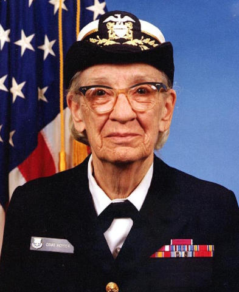

Sempre existiram mulheres na programação, criando, co-criando, inovando e contribuindo para área de Tecnologia. No entanto, nem sempre elas tiveram o mesmo espaço, destaque e reconhecimento dos homens. Aliás, mesmo hoje, as mulheres continuam – infelizmente – representando apenas 17% do total de pessoas desenvolvedoras do país.
A primeira programadora da história
A primeira mulher a receber um doutorado em Ciências da Computação.
Foi a primeira mulher a se graduar na consagrada Universidade de Yale, nos Estados Unidos.
Conheça mais sobre a história das mulheres na programação neste artigo